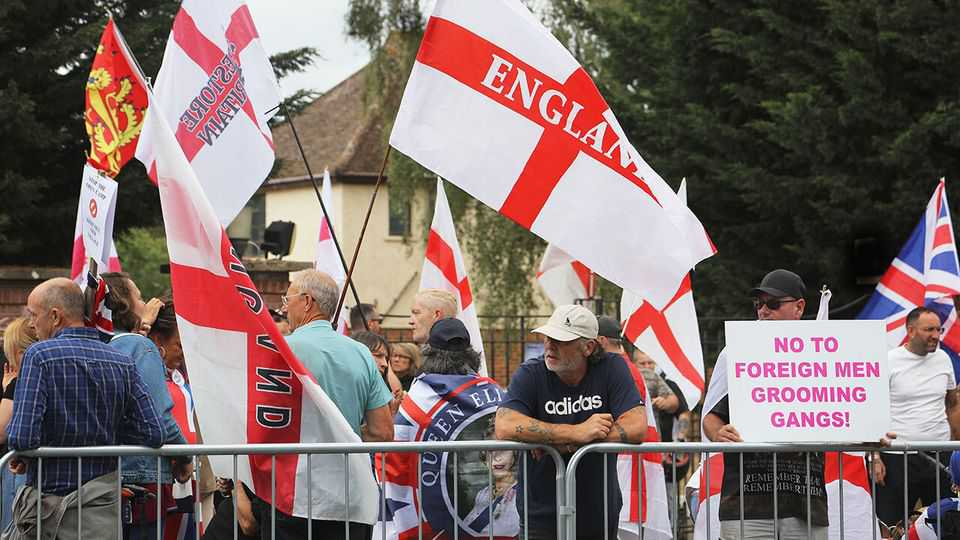

A widely repeated statistic is shaping Britain’s grooming-gangs debate
The Economist investigates whether it stands up

Jul 30th 2026
SCANDAL IS an overused term. But the decades-long sexual abuse of (mostly white) British girls by gangs of men of predominantly Pakistani heritage, often ignored by the authorities, more than deserves the label.
It has also become an obsession of the international far right. On July 22nd Jordan Peterson, a popular conservative commentator, described it as a “sexual atrocity now seemingly integral to multicultural Britain”. Asked in a recent interview with The Economist whether he is anti-Muslim, Elon Musk said, “I am against rape and murder.” He has previously claimed on his social-media platform, X, that the media “hid the fact that a quarter million little girls were—still are—being systematically raped by migrant gangs in Britain”. Those on the right are particularly outraged that authorities’ fears of appearing racist or upsetting relations between groups in the affected communities were a central cause of the state’s failure to protect vulnerable children.
The right’s obsession has itself produced a reaction from those on the “anti-racist”, progressive left, who have tended to play down the (undeniable) ethnic and religious element of these crimes. They accuse right-wing campaigners of cynically exploiting the grooming-gang scandal to stir up anti-Muslim hatred and advance their views that Pakistani or Muslim men are a profound threat to Western society. In the light of rising hate crimes against Muslims in Britain, such concerns are not unfounded. This heated row has long prevented a sensible conversation about how controversial factors—from honour culture to the role of misogyny in fundamentalist Islam—may have led to the overrepresentation of Pakistani men in these gangs.
Into this maelstrom Rupert Lowe, leader of the far-right Restore Britain party, has thrown a shocking number. A post sharing his crowdfunded “Rape Gang Inquiry Report”, published last month, has received more than 51m views on X. Its estimate that at least 250,000 British girls have been abused by “predominantly Muslim Pakistani gangs” quickly went viral and has since been repeated by influencers such as Tommy Robinson, a far-right agitator, and Ben Shapiro, a conservative commentator.
Dig into the report, however, and it becomes apparent that its central claim is ill-founded. The 250,000 figure was taken directly from an estimate by Malcolm Pearson, a former Tory and now independent peer who in 2018 told the House of Lords that “upwards of 250,000 young white girls” had been raped in Britain since the turn of the century—“very largely by Muslim men”.
Lord Pearson’s office later explained to The Journal, an Irish newspaper, that his estimate was based on extrapolating from the documented abuses that happened in Rotherham (the official review estimated 1,400 victims over 16 years; Lord Pearson used a slightly higher estimate of 1,700), Telford (1,000 victims over 40 years) and Oxfordshire (373 victims over 16 years). Using rough population numbers to estimate rates of victimisation, he then applied these rates nationally. Based on this he concludes that the number of victims across Britain since 2000 is between 162,000 and 440,000. The “250,000 victims of radical Muslim grooming gangs” estimate is offered simply as an almost-midway point.
This methodology is obviously flawed. First, it assumes that rates of victimisation in areas with notoriously high levels of abuse are typical nationally. The 440,000 estimate assumes that all of Britain has the same rates as were found in Rotherham (the lower estimate of 162,000 comes from assuming that all of Britain is like Oxfordshire). Second, Lord Pearson erroneously uses the population of the city of Oxford when looking at victim figures for the wider county of Oxfordshire. Correcting that mistake produces a national estimate of fewer than 60,000 victims. Third, even if extrapolation were a fair method, the Rotherham, Telford and Oxfordshire estimates are based on a far broader definition of child sexual exploitation (counting all cases in which children were co-opted into performing sexual activities by a person with more power) than Mr Lowe’s much narrower definition of sexual exploitation by gangs of predominantly Asian men.
Frustratingly, Britain lacks a reliable national estimate for the number of children abused by grooming gangs of men of predominantly Pakistani heritage. The nearest there is comes from a government estimate of 6,850 victims in Britain in 2015. That figure does refer specifically to victims of organised abuse (ie grooming gangs), but it includes perpetrators and victims of all ethnicities. Producing a more rigorous and specific national estimate is part of the task of a national inquiry launched by the Starmer government in December 2025. It will specifically examine the role of ethnicity, religion and culture as they relate to both the offenders and the institutions that failed to intervene. But it has yet to begin work in earnest and will take several years to report.
When it does, the true scale of the scandal will no doubt still appal and shock the country. Meanwhile, the row between bad-faith commentators is set to continue. Instead of a careful and constructive debate, discussion is dominated by hysteria on the right and awkward silences on the left that only fuel perceptions of cover-up. Both are failing Britain. ■